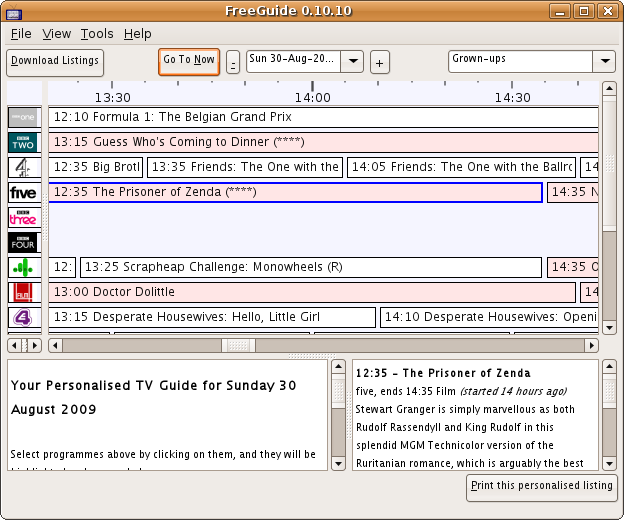
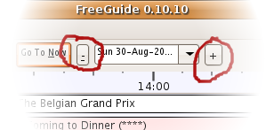
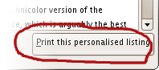
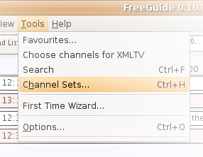
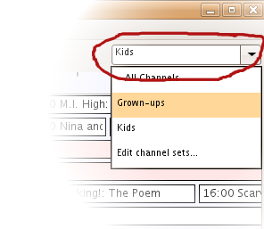

FreeGuide
FreeGuide| FreeGuide |
UserGuide »
The Main Screen |
|
|
< Running For The First Time | User Guide | Features > FreeGuide's main screen
On the main screen time advances from left to right (click Go To Now to see what's on now), and the channels are shown one below another. The + and - buttons change the day you are looking at, or you can choose a day from the list. 
You can double-click on a programme (making it change colour) to add it to your personalised TV guide for today, which is shown in the bottom section of the window. You can change the colours, but the default setup has green for programmes that are in your personalised guide, and pink for movies. Clicking Print this personalised listing will open up your web browser with your customised TV guide, and you can print it by choosing File and then Print in your browser. 
To change the order of your channels, or only show some of them at a time, use the Channel Sets option on the Tools menu. 
After you've made one, you can choose a channel set with the dropdown list at the top-right of the main screen. 
|
| If you would like to help improve this site, please Contact Us and we will give you the password to edit pages. | |
| Page last modified on August 30, 2009, at 08:50 PM PmWiki Info | - - - () - |